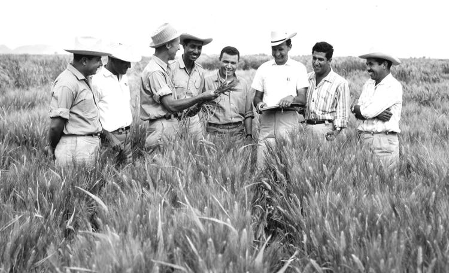

1914-2009
The man who saved a billions lives.
Dr. Norman Borlaug with his friends
Dr. Norman Borlaug: Civilization as it is known today could not have evolved, nor can it survive, without an adequate food supply.
If you have time you should read more about this incredible human being on his Wikipedia entry.